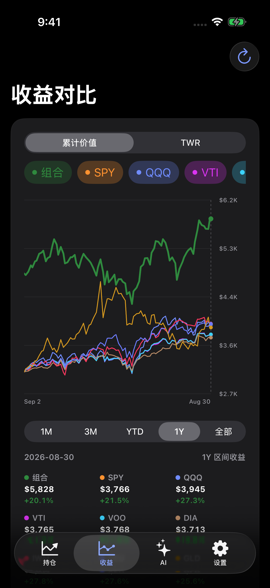
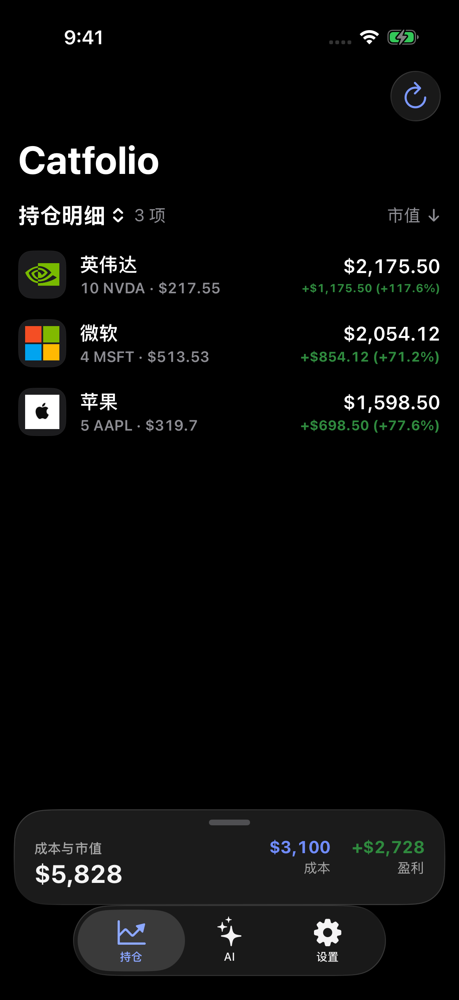
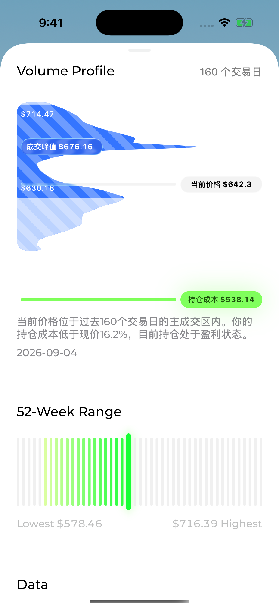
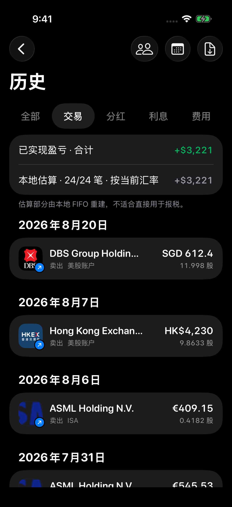

买入点 · 卖出点
把历史买卖标记放回价格曲线，结合成本参考线，回看每一次操作。
少一点纷扰。
多一点清晰。


App 界面展示 · 数值仅用于展示界面，不代表收益承诺
个股研究

把历史买卖标记放回价格曲线，结合成本参考线，回看每一次操作。
观察成交密集区与期权持仓集中位置，为潜在支撑、压力寻找依据。
通过 Volume Profile 看成交集中在哪些价格，识别 POC 与价值区间。
将当前价格放进过去 52 周的高低区间，理解它所处的位置。
查看一致预期、评级与目标价，了解市场对公司的判断。
从三大财务报表，到 EPS、收入与预期对比，按年度或季度研究公司。
查看与公司相关的 Polymarket 事件，补充对市场预期的观察。
关键价位是观察参考；成交量分布与期权持仓不构成必然的支撑或压力。分析师、财报与预测市场的覆盖依赖各数据源。
历史与持有成本

买入、卖出、数量与金额按时间归档。按账户和年份筛选，查看已实现盈亏并导出 CSV。
从已导入的分红流水汇总收入，逐笔查看派息记录，整理不同账户的分红。
汇总已入账的现金利息，查看每笔金额与来源账户，让闲置现金的收入也有迹可循。
按当前基金市值与年费率估算持有成本，查看年度费用、基金总市值和加权费率。
分红与利息按已导入流水汇总。基金费用是年度估算，已反映在基金净值中的费用不应重复扣除；本地估算的已实现盈亏不能直接作为报税结果。
查看历史模块完整介绍 ↓跨市场投资
在个股详情查看汇率盈亏金额与可用的比例，了解汇率变动对持仓的影响。区分券商报告、本地计算与估算结果；历史数据不足时明确显示不可计算。
支持简体中文与英文，可手动选择，也可跟随系统语言。语言与显示货币独立设置，让界面符合你的阅读习惯。
选择美元、英镑、欧元、人民币、港币、加元、澳元、新加坡元或日元。组合汇总等采用显示货币的金额，按 App 可用汇率自动换算。
显示货币换算用于查看与比较，不执行实际换汇；交易原币金额在相应明细中保留。
查看语言与货币设置模块 ↓待开放功能
税务计算入口已列入收益表现页，当前版本尚未开放。现阶段可查看历史交易和已实现盈亏。
计划探索卖出亏损持仓对税务结果的影响。当前版本尚未提供模拟器，支持范围与规则待确定。
希望通过照片识别持仓，减少手工录入。当前拍照入口未开放；现有导入方式为支持的券商连接与 CSV 文件。
以上功能尚无可用界面截图，开放时间待定。
逐一探索 Catfolio 的 19 个功能模块。已配图的模块可点击查看完整界面，市场轮动截图待补充。
独立界面截图待补充
市场轮动 · RRG
比较六个市场指数相对标普 500 的强弱与动量。
使用来源周线快照，最新周点可能尚未收盘。独立界面截图待补充。
板块轮动
将 11 个美国行业板块，放在同一张四象限图中观察。
截图为早期原生版本。轮动采用板块相对强弱与动量方法，不是 JdK RRG；行情更新依赖快照服务。
策略编曲家
从一个投资想法，到可检查、可追溯的研究流程。
截图为原生策略编辑入口。当前主要支持可识别的美元美股日线，只读分析与模拟，不自动下单，也不是历史回测；新页面本地化仍在完善。
账户管理
把分散在不同券商的资产，放回同一个视野。
截图为演示账户。券商连接需要相应只读授权。
组合首页
从资产全貌，到每一只股票的变化。
截图展示历史版本的演示组合首页。
今日盈亏
知道涨跌多少，也知道变化从哪里来。
按当前持仓与最近报价推算，未计入今日买卖影响。
ETF 穿透
你持有的不只是一只 ETF，而是它背后的公司。
截图为穿透后的热力图。覆盖取决于基金快照，部分使用指数代理。
收益分析
把自己的投资旅程，与市场放在一起比较。
截图为收益对比页；不同版本的口径名称可能不同。
个股详情
从买入时刻，到现在的价格位置。
截图展示成交量价格分布。行情依赖数据源覆盖。
期权 OI
按执行价，观察 Call 与 Put 聚集在哪里。
截图为布局演示数据。限支持的美国美元股票 / ETF；OI 不代表成交量或必然支撑阻力。
财务与市场预期
让财报、盈利和预期，成为研究的依据。
截图为盈利历史组件的测试样本，非真实公司财报。各数据项取决于来源覆盖。
市场研究
把持仓变化放回指数、波动率和行业背景中。
最近可用行情快照，非盘中实时全市场榜单。
今天值得关注
整理变化、证据和风险，帮助你决定下一步研究什么。
截图为研究页内的演示分析，不是实时建议。
选股器
写下你想找的公司，再逐项核验条件。
截图展示条件入口。运行结果取决于数据服务权限和覆盖。
行业情绪
用波动率和成交量，补充价格之外的观察。
目前为半导体专项，使用导入快照；不是所有行业的实时情绪服务。
AI 助手
从组合问答，到个股的正反方论点。
截图为演示分析。本地模型需设备支持；远程模型需网络与授权。
历史与费用
把交易、现金活动与持有成本，整理得清清楚楚。
基金费用估算不是实际扣款流水，不应从净值收益中重复扣除。
公开投资者模拟
从公开披露中，研究不同投资者的持仓。
截图为人物选择页。模拟基于有时滞的披露，并非真实账户收益或自动跟单。
个性化与本地数据
熟悉的语言、币种和外观，自主掌握的账本。
截图展示本机数据设置。个人账本、券商凭据和账户选择不通过偏好同步。
截图来自 App 的不同开发版本及演示 / 测试状态，具体说明见各模块。拍照添加持仓与税务计算尚未开放。
投资账本保存在 iPhone 本机。无需让电脑或服务端一直在线，也能查看自己的组合。
用 SwiftUI 为 iPhone 打造。从点按到滑动，让熟悉的操作成为思考的延伸。
需要时，向 AI 提问。Apple 本地模型在设备上处理；选择 Codex 或 DeepSeek 时，相关上下文会发送给对应服务。
Catfolio 帮助你查看持仓、分析收益和理解组合。券商交易仍在你的券商 App 中完成。
不需要。iOS App 可以独立运行，在手机上连接支持的券商，或从“文件”导入 CSV 交易记录。
持仓账本保存在 iPhone 本地，连接凭证保存在系统 Keychain。同步行情、券商数据和使用可选 AI 功能时，会连接相应的第三方服务。
App 最低支持 iOS 18。当前官网尚未配置 App Store 或 TestFlight 链接；发布入口开放后，将在这里提供。

为你的 iPhone，也为你的长期计划。